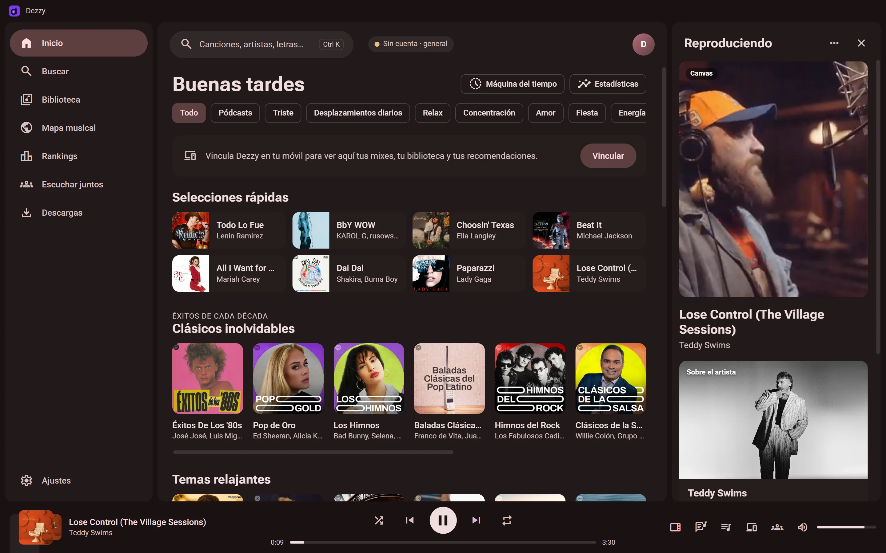
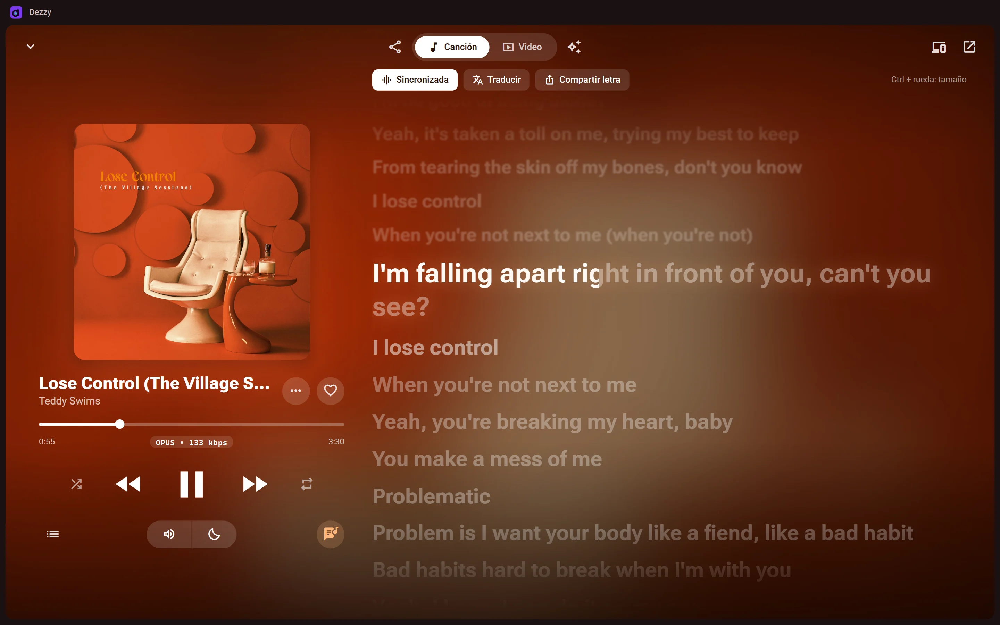
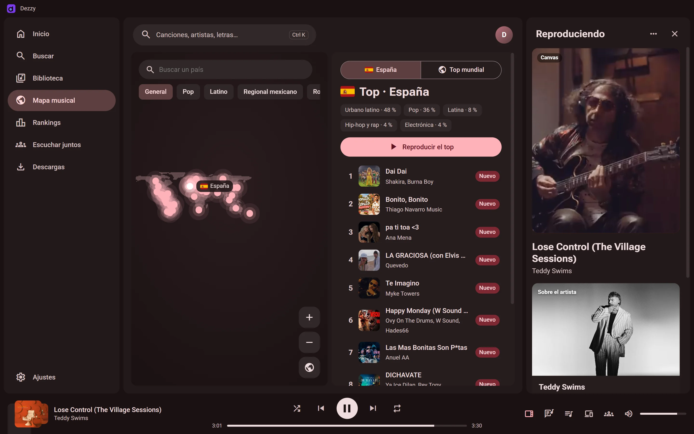
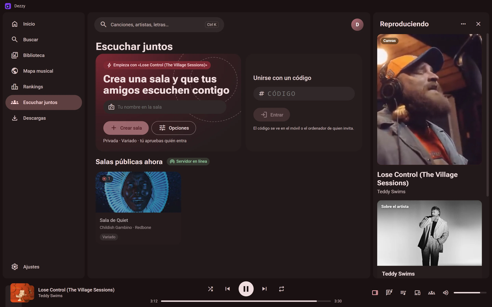
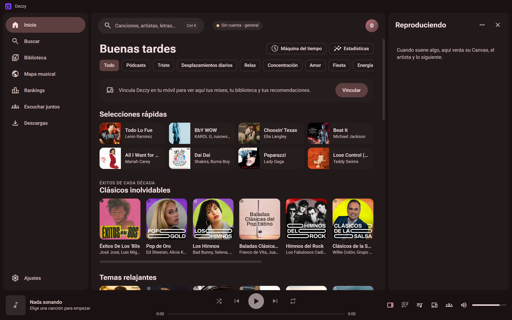

Tu música, sin anuncios ni cuenta.
Letras al compás, un mapa del mundo y salas para escuchar juntos.

¿Qué pasa al darle a reproducir?
La letra sigue a la voz palabra a palabra. Puedes traducirla o compartir un verso como tarjeta.

¿Qué suena en otros países?
El mapa musical pinta el mundo por lo que se escucha. Toca un país, mira su top y ponlo entero.

¿Puedo escuchar con alguien?
Crea una sala, pasa el código y oiréis lo mismo a la vez. También hay salas públicas abiertas.

¿Qué cambia frente a lo de siempre?
| En | Lo habitual | Dezzy |
|---|---|---|
| Entre canciones | un anuncio | la siguiente canción |
| La letra | un bloque fijo | sigue la voz |
| Para empezar | crear una cuenta | abrir y escuchar |
| El código | cerrado | abierto, GPL-3.0 |
¿Dónde funciona?

La app de escritorio, con instalador para Windows.

Android 6.0 o superior. Escanea el QR y el móvil manda en el ordenador.
¿Cuánto cuesta?
Nada. Sin anuncios, sin suscripción y con el código a la vista.